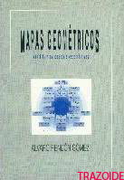
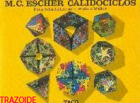

Productos
Libro: Geometria descriptiva superior y aplicada
Autor: Fernando Izquierdo Asensi
Editorial: El Autor
270 páginas – 210 x 280 mm – Año 1975 – ISBN 84-922109-4-X

Descripcion
Completísimo libro sobre propiedades, teoremas y procedimientos a aplicar en la geometría descriptiva, aunque no trata de ninguno de los cuatro sistemas de representación, no obstante algunos gráficos los da en el sistema diédrico. Se ha remodelado la antigua versión, que data del año 1975. Sigue siendo un libro irrepetible por su temática, no existiendo ningún otro libro que abarque los mismos temas. Versa sobre proyectividad, polaridad, homología, afinidad, sobre todo en el plano, aunque da algunas nociones en el espacio. También trata las curvas planas, cónicas, de rodadura, alabeadas y hélices, así como una parte dedicada a las superficies muy completa.
En general, un irrepetible libro sobre los fundamentos de la geometría proyectiva y descriptiva, con interesantes partes dedicadas a la proyectividad, curvas y superficies.
Libro: Fundamentos Geométricos
Autor: Víctor Villoria San Miguel
Editorial: Dossat 2000
385 páginas – 170 x 240 mm – Año 1992 – ISBN 84-237-0807-1

Descripcion
Buen libro sobre geometría, aplicable al dibujo. Se divide en dos partes, una sobre geometría plana y la segunda en el espacio. Este es uno de los escasos libros que trata sobre geometría espacial.
Fundamentalmente da las propiedades de los polígonos, las transformaciones, las tangencias, la proporcionalidad y proyectividad. Los dibujos son simples y claros. Casi todos los dibujos son esquemáticos, por lo que no están en ningún sistema de representación.
En general, un muy buen libro (de los poco que existen) sobre geometría, no solo plana sino también la espacial.
Libro: Superficies poliédricas
Autor: José Luis Ferrer Muñoz
Editorial: Paraninfo
201 páginas – 191 x 260 mm – Año 1999 – ISBN 84-283-2586-3

Descripcion
Libro dedicado a las propiedades y características de los poliedros regulares, duales, arquimedianos y de Catalán. Solo explica la representación de los poliedros regulares en el sistema diédrico, pero está más encaminado a exponer las características de los poliedros, su obtención y desarrollos. Tiene gran cantidad de dibujos de los cuerpos en perspectiva, siendo todos originales. Al final ofrece un par de temas sobre empaquetamientos de poliedros y sus aplicaciones en construcción.
En general, un buen libro (de los poco que hay) sobre poliedros.
Libro: Curvas y superfícies en diseño de ingeniería
Autor: José María Gomis Martí
Editorial: Univ. Politéc. Valencia
210 x 300 mm – Año 1996 – ISBN 8477213682, 9788477213680

Descripcion
Como su título indica este tomo versa sobre las curvas y superficies curvas. Es una larga descripción de las propiedades de ciertas curvas. Aunque su objetivo es el de mostrar las características de estos elementos entra en la representación y trazado de algunos de ellos tanto en el plano como en los sistemas diédrico y axonométrico. Entre los temas que contiene están las propiedades de las curvas, las curvas de rodadura, las curvas cónicas, hélices, superficies regladas, cuádricas, parabólicas, hiperbólicas, y elípticas.
En general, un libro sobre las propiedades de las curvas y las superficies curvas para quien necesite ahondar sobre la teoría de estos temas.
Libro: Mapas Geométricos. Análisis y Aplicaciones Especulativas
Autor: Álvaro Rendón Gómez
Editorial: Padilla libros
104 páginas – 169 x 240 mm – Año 1999 – ISBN 84-89769-49-4
Descripcion
Libro encaminado a crear unos hábitos, procedimientos o razonamientos para resolver problemas de construcción de polígonos. Da, en primer lugar, unos procedimientos (mapas geométricos) para la resolución de ejercicios de geometría.
Le sigue una segunda parte en la que explica principalmente algunas propiedades de los polígonos.
A continuación da algunos ejemplos de problemas en los que se han aplicado los métodos expuestos.
En general, un libro dedicado a la geometría, que ofrece un método alternativo para los problemas de polígonos.
Libro: El libro de las curvas
Autor: Pablo Olalquiaga – Alfonso Olalquiaga
Editorial: Fundación Esteyco
248 páginas – 0 x 0 mm – Año 2005 – ISBN 84-933553-0-5
Descripcion
Este libro se compone de dos partes. La primera hace una muy corta exposición de la generación, propiedades y descripción de algunas curvas planas. Esta parte es poco extensa y solo se dan unas descripciones a título informativo. La segunda parte es una colección de fotografías en las que se aprecian curvas. Las curvas de las fotografías no son todas las que se muestran en la primera parte. Las fotografías están reunidas en temas como curvas en la naturaleza, en la música, en la ingeniería y en la arquitectura. Las fotografías solo cuentan con un pie de foto de una o dos líneas describiendo su contenido u origen. La primera parte como recopilatorio de curvas o sus propiedades es escasa y poco interesante. La segunda parte dedicada a la colección de fotografías es un entretenimiento visual sin más objetivo que el disfrutar con la belleza de las formas.
En general, un libro para entretenerse viendo algunas fotografías de gran plasticidad y belleza, con un pequeño recopilatorio de descripciones de curvas y poca utilidad para el dibujo técnico.
Libro: Geometría Sagrada
Autor: Robert Lawlor
Editorial: Debate
112 páginas – 190 x 270 mm – Año 1994 – ISBN 84-7444-748-8
Descripcion
De los pocos libros que verdaderamente tratan la geometría sagrada con «geometría» y no solo con palabras de imposible compresión. De cada tema hace una larga exposición. Al final de cada capítulo tiene unos «cuadernos de prácticas» donde verdaderamente se enseña el trazado de lo explicado en los temas, siendo esta la parte que lo hace diferente a otros libros de la misma temática.
En general, un libro para los que quieran adquirir algunos conocimientos sobre la geometría sagrada, con trazados interesantes.
Libro: Los nombres del dibujo
Autor: Juan José Gómez Molina, Lino Cabezas y Miguel Copón
Editorial: Cátedra
576 páginas – 165 x 240 mm – Año 2005 – ISBN 84-376-2271-9
Descripcion
Original libro que no trata sobre el dibujo (o el arte) sino sobre su lenguaje. Se puede dividir en dos partes. La segunda parte es la más interesante y la que le da originalidad a esta obra. Se trata de una relación de palabras utilizadas en las distintas facetas de la representación gráfica (arte en general, pintura, escultura, arquitectura, dibujo técnico y otros) donde nos explican su origen, ejemplos antiguos donde se ve aplicado el término y uso actual. Se nota el meticuloso trabajo de recopilación de datos de los autores. La parte dedicada al dibujo técnico es interesante por ser casi el único lugar donde podemos encontrar referencia a esos términos.
En general, un buen libro para aquellos que quieran saber el origen y significado de los términos utilizados en dibujo técnico y bellas artes.
Libro: El espejo Mágico de M. C. Escher
Autor: Bruno Ernst
Editorial: Taschen
112 páginas – 230 x 300 mm – Año 1978 – ISBN 3-89450-240-1
Descripcion
Interesante libro dedicado a la obra del pintor Mauritis Cornelis Escher. Este artista se diferenció de los demás al utilizar temas de geometría y perspectivas en su obra. Trata en primer lugar de su biografía para pasar después a exponer sus creaciones según la técnica utilizada. La forma en que ese artista «juega» con los conceptos que todos hemos aprendido sobre geometría y descriptiva, hacen que nos demos cuenta de que todo es subjetivo y que las reglas que aceptamos como leyes no son tales si no se comprenden bien. En especial es de reseñar la parte dedicada a la perspectiva que deparará sorpresas a los que pensaban que ya sabían dibujarlas.
En general, un libro muy interesante para recrearse con la geometría y la perspectiva.
Libro: M. C. Escher Calidociclos
Autor: D. Schattschneider y W. Walker
Editorial: Taschen
40 páginas – 300 x 230 mm – Año 1977 – ISBN 3-89450-242-8
Descripcion
Interesante libro dedicado un tipo de poliedro flexible (los calidociclos) y algunos de los poliedros platónicos. Se apoya mucho en la obra de Escher para decorar los poliedros y demostrar alguna de las leyes de teselación. Las páginas centrales están formadas por los desarrollos de estos poliedros, estando además troquelados para sea más fácil su recorte, y permitir que el lector pueda construirlos. El libro está impreso apaisado, uniéndose sus páginas por el lado menor.
En general, un libro muy interesante para recrearse con la construcción de poliedros y que ayuda a visualizar a partir de la construcción real.